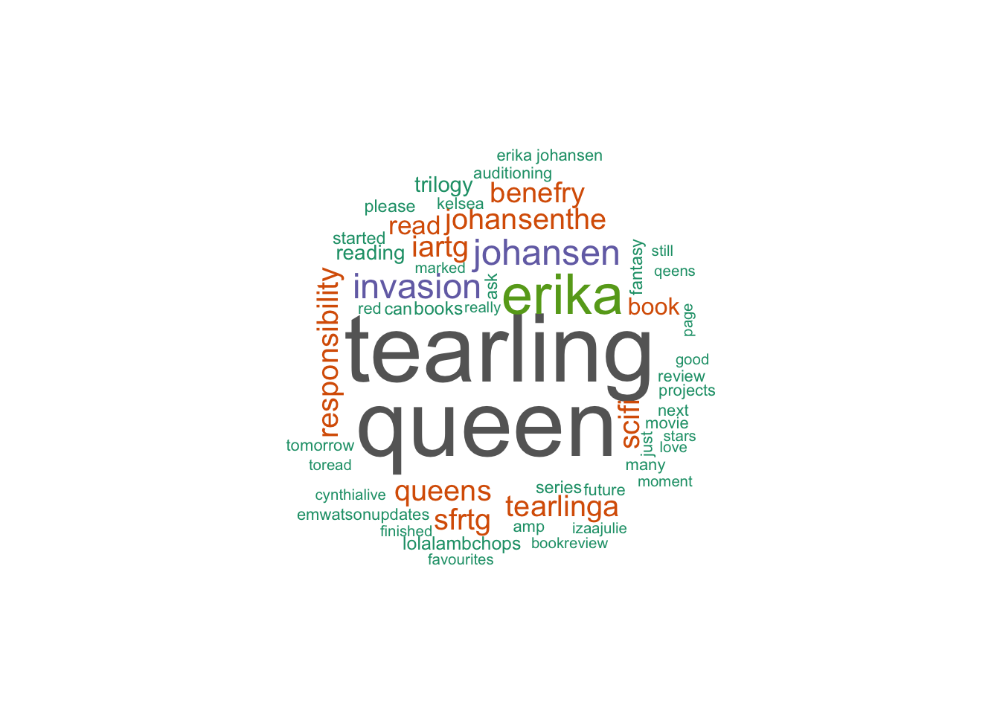

Queen of the Tearling
Author: Erika Johansen “You think of beauty only as a blessing, Majesty, but it brings its own punishments.”
― Erika Johansen, Queen of the Tearling
Summary
An untested young princess must claim her throne, learn to become a queen, and combat a malevolent sorceress in an epic battle between light and darkness in this spectacular debut—the first novel in a trilogy.
Young Kelsea Raleigh was raised in hiding after the death of her mother, Queen Elyssa, far from the intrigues of the royal Keep and in the care of two devoted servants who pledged their lives to protect her. Growing up in a cottage deep in the woods, Kelsea knows little of her kingdom’s haunted past . . . or that its fate will soon rest in her hands.
Long ago, Kelsea’s forefathers sailed away from a decaying world to establish a new land free of modern technology. Three hundred years later, this feudal society has divided into three fearful nations who pay duties to a fourth: the powerful Mortmesne, ruled by the cunning Red Queen. Now, on Kelsea’s nineteenth birthday, the tattered remnants of the Queen’s Guard—loyal soldiers who protect the throne—have appeared to escort the princess on a perilous journey to the capital to ascend to her rightful place as the new Queen of the Tearling.
Though born of royal blood and in possession of the Tear sapphire, a jewel of immense power and magic, Kelsea has never felt more uncertain of her ability to rule. But the shocking evil she discovers in the heart of her realm will precipitate an act of immense daring, throwing the entire kingdom into turmoil—and unleashing the Red Queen’s vengeance. A cabal of enemies with an array of deadly weapons, from crimson-caped assassins to the darkest blood magic, plots to destroy her. But Kelsea is growing in strength and stealth, her steely resolve earning her loyal allies, including the Queen’s Guard, led by the enigmatic Lazarus, and the intriguing outlaw known simply as “the Fetch.”
Kelsea’s quest to save her kingdom and meet her destiny has only just begun. Riddled with mysteries, betrayals, and treacherous battles, Kelsea’s journey is a trial by fire that will either forge a legend . . . or destroy her.

## [1] "MadMakNY: @SuperLaurenLove \"The Queen of the Tearling\" series."
## [1] "Natalie_Crown: @RachelMisra it's chapter by chapter and very in depth so it will take time XD https://t.co/3XPuwdur3V"
## [1] "RachelMisra: @Natalie_Crown have you read the queen of the tearling? If so...thoughts?"
## [1] "BookFreakOut: @amanda_skoog @goodreads Queen of the Tearling is fabulous! \xed\xa0\xbd\xed\xb8\x80"
## [1] "amanda_skoog: @goodreads Magnus Chase and the Hammer of Thor and The Queen of the Tearling! \xed\xa0\xbd\xed\xb3\x96❤️\n#amreading"
## [1] "sophienotemily: @NoraReed The Girl of Fire and Thorns. Six of Crows. Queen of the Tearling. The Raven Boys. Finnikin of the Rock & sequels. Dragonsong"
## [1] "travisdon1981: RT @Benefry: Erika Johansen-“The Invasion of the Tearling”-A Queen's Responsibility #scifi #SFRTG #IARTG https://t.co/AwKBffLauD https://t.…"
## [1] "FindingHomeBook: RT @Benefry: Erika Johansen-“The Invasion of the Tearling”-A Queen's Responsibility #scifi #SFRTG #IARTG https://t.co/AwKBffLauD https://t.…"
## [1] "wordrefiner: RT @Benefry: Erika Johansen-“The Invasion of the Tearling”-A Queen's Responsibility #scifi #SFRTG #IARTG https://t.co/AwKBffLauD https://t.…"
## [1] "westmetromommy: 17% done with The Queen of the Tearling, by Erika Johansen https://t.co/9JTPzDGsv3"
## [1] "thebelgbooklion: On page 285 of 448 of The Queen of the Tearling, by Erika Johansen https://t.co/GRwKk1Vsj3"
## [1] "BoundGalaxy: RT @Benefry: Erika Johansen-“The Invasion of the Tearling”-A Queen's Responsibility #scifi #SFRTG #IARTG https://t.co/AwKBffLauD https://t.…"
## [1] "ArgonPress: RT @Benefry: Erika Johansen-“The Invasion of the Tearling”-A Queen's Responsibility #scifi #SFRTG #IARTG https://t.co/AwKBffLauD https://t.…"
## [1] "amandajevans: RT @Benefry: Erika Johansen-“The Invasion of the Tearling”-A Queen's Responsibility #scifi #SFRTG #IARTG https://t.co/AwKBffLauD https://t.…"
## [1] "FDS_NaturallyMe: RT @Benefry: Erika Johansen-“The Invasion of the Tearling”-A Queen's Responsibility #scifi #SFRTG #IARTG https://t.co/AwKBffLauD https://t.…"
## [1] "CowboySciFiBot: RT @Benefry: Erika Johansen-“The Invasion of the Tearling”-A Queen's Responsibility #scifi #SFRTG #IARTG https://t.co/AwKBffLauD https://t.…"
## [1] "Benefry: Erika Johansen-“The Invasion of the Tearling”-A Queen's Responsibility #scifi #SFRTG #IARTG https://t.co/AwKBffLauD https://t.co/6wKL3tjAbg"
## [1] "heathershambles: 4 of 5 stars to The Queen of the Tearling by Erika Johansen https://t.co/LtCRlkKabL"
## [1] "__brittbryan: @izaajulie I'm interested in Scarlet & Queen of the Tearling. Let me know if you see anything in my media! Some have already been traded."
## [1] "AdamSanto: RT @RagnaBjornson: Finished reading The Queen of the Tearling last night. Next book on my list is #TheYearoftheFlood #AmReading"##
## The downloaded binary packages are in
## /var/folders/ny/hkylpsnn3qs2pg8wdvtfwx_m0000gn/T//Rtmp1CEuYO/downloaded_packages
Key Themes
- bookstomovies
- crossworlds
- strongfemaleleads
Extras
- A #1 Indie Next Pick
- A LibraryReads Selection
- Emma Watson is rumored to play Kelsea in a future movie adaptation
summary from Goodreads
extras from Barnes & Noble